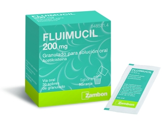
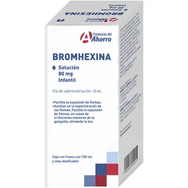

La mayoría de los mucolíticos actúan rompiendo los enlaces disulfuro en las glicoproteínas del moco, reduciendo su viscosidad. Algunos aumentan el contenido de agua en el moco, haciéndolo más fluido. Favorecen la producción de moco seroso (menos espeso), lo que ayuda a "diluir" el moco más denso existente.
Algunos mucolíticos también mejoran el movimiento ciliar, favoreciendo el transporte del moco. Acetilcisteína tiene capacidad para neutralizar radicales libres, y es útil en enfermedades respiratorias crónicas.
N-acetilcisteína (NAC) Adultos: 600 mg 1 vez al día o 200 mg cada 8 hNiños: 100 mg cada 8 h (mayores de 2 años) - Tabletas efervescentes, cápsulas, solución oral, viales inyectables, nebulizable
Bromhexina Adultos: 8-16 mg cada 8-12 hNiños: 4-8 mg cada 8 h (según edad y peso) - Jarabe, tabletas, gotas orales
Ambroxol Adultos: 30 mg cada 8-12 hNiños:- 6-12 años: 15 mg cada 8-12 h- 2-6 años: 7.5 mg cada 8-12 h - Jarabe, tabletas, gotas orales, ampolletas IM/IV
Carbocisteína Adultos: 750-1500 mg al día en 2-3 tomasNiños: 250-500 mg cada 8 h - Jarabe, cápsulas, tabletas
N-acetilcisteína (Fluimucil, Bisolvon NAC, NAC-100) Bromhexina (Mucosan, Sekrol), Ambroxol (Mucosolvan, Flavoxate, Sekretovit), Carbocisteína (Mucolite, Broncolin C, Broncobutol)